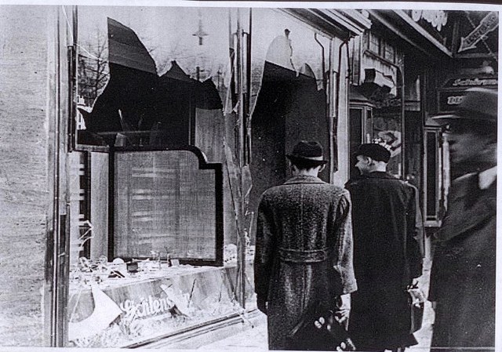

Preluding to the polish invasion a lot of things happened in and outside of Germany at the time. I am going to bring up a few things of note during the period of 1934 – 1939 that might have influenced events in the future.
On May 22th 1939 the “Pact of Steel” was signed between Germany and Italy. I cannot find any account of other countries being worried about the pact however it’s still worth mentioning.
Occupation of Austria: On the 12th of February 1938 German vice Chancellor Franz von Papen arranged a meeting with Austria’s Chancellor Dr. Kurt von Schuschnigg at Hitler’s private mountain retreat. Schuschnigg wanted to assure peace between Austria and Germanys growing military power. Hitler personally greeted Schuschnigg when he arrived appearing to be in a good mood. Moments after his arrival it was clear Hitler did not want to negotiate a peace between the two countries, he wanted Austria incorporated in to the Third Reich. After two hours of diplomatic hell for Schuschnigg who later said he aged 10 years that day.
Later he was given a two-page document containing Hitler’s demands. It contained several demands such as all Nazis be let out of jail and the lawyer Dr. Arthur Seyss-Inquart shall be the new Minister of Interior with full control over the police and the incorporation of Austria to the Third Reich. Schuschnigg was quickly ushered to Hitler’s office where he was told sign immediately or else. He gave the answer that only the president can accept such a proposal, Hitler gave him 3 days to sign the document.
The Austrian President Wilhelm Miklas stubbornly refused to accept all the demands but caved from pressure when Hitler ordered his generals to mobilize outside of Austria’s borders. As a desperate last attempt to remain independent Schuschnigg announced on the 24th of February that the country was going to hold a referendum on the 13th of Mars about the matter of joining the Reich or remain independent.
After hearing of the referendum Hitler was furious. He made his generals draw up plans of the invasion and be prepared. But everything was not going to be so easy, as Italy might respond badly to the invasion of a neighboring country. This was before the pact of steel was signed and Hitler quickly sent an emissary to Rome. As Schuschnigg heard the news of an invasion he pleaded to Seyss that the referendum would be canceled as long as it wouldn’t involve any bloodshed. After hearing of this Herman Göring in a series of phone calls forced Schuschnigg to resign from his post as Chancellor. Göring also demanded that President Miklas was to appoint Seyss as Chancellor or Germany would Invade the next morning. Miklas refused at first but realized at around midnight that his position was hopeless. When Hitler launched his invasion he received word from Rome that Italy’s Dictator Benito Mussolini that they would not interfere and Hitler said “Tell Mussolini I will never forget him for this! Never, never, never no matter what happens… I shall stick to him whatever may happen, even if the whole world gangs up on him”.
That morning as scheduled German troops entered Austria and were mostly welcomed as heroes by the ethnic Germans and the native Austrian population.
The Munich Agreement: After occupying Austria Hitler set his eyes on Czechoslovakia, moreover the Sudetenland region where there were around 3 million ethnic Germans living. Czechoslovakia was a small country and relied mostly on help from the western powers France and Great Britain. Czechoslovakia also had a treaty with the Soviet Union but they were ignored as they did not want communism to spread to the country. But France and Britain tried to avoid a war with Germany at all costs and tried to settle it with diplomacy. Britians Prime Minister Neville Chamberlain arranged a meeting with Hitler at his mountain Resort. At the meeting Hitler agreed to not take any military action for the moment and Chamberlain returned to Britain to persuade the cabinet and the French to accept a referendum in Sudetenland. It was agreed that all areas with a majority of ethnic Germans was to become part of Germany. This proposal was reluctantly accepted by Czechoslovakia on the 21th of September 1938.
On September 22th Chamberlain flew to Germany to meet Hitler at Godesberg where he learned that Hitler had stiffed the agreement to occupy the whole Sudetenland by the German army and the Czechs evacuated. Chamberlain agreed to propose his demands to the Czech government, France and the British cabined but they all refused.
To avoid a war Chamberlain proposed a conference between Britain, France, Germany and Italy in Munich. At the meeting Benito Mussolini proposed a plan very similar to what Hitler said in Godesberg. It was discovered after the war that the plan Mussolini proposed was written by Herman Göring. The proposal was accepted by the leaders present, Czechoslovakia was given the choice to submit to the demands or face Germany alone. They choose to submit. And so Hitler had occupied another country without firing a bullet.
Kristallnacht (Night of broken glass): The so called Crystal Night happened during the night on the 9th of November 1938 and longer in some places. Kristallnacht is German for Crystal night, the name symbolized the vast amounts of glass lying in the streets outside the looted businesses.
After the German diplomat Ernst vom Rath was killed by the Polish-Jewish student Herschel Grynszpan on the 7th of November. When the news reached Hitler he conferred with Joseph Goebbels to use this incident as justification towards violence.
On the 9th Several former SA members and citizens started to target Jewish businesses, homes, hospitals, schools and Synagogues. Police and firefighters were ordered to stand down and only to intervene when non-Jewish property was in danger from fires, Jews were also to be arrested. Over 1000 Synagogues were burned and 7000-7500 businesses looted. 91 Jews were confirmed killed but is believed to be more. Around 30 thousand Jews were also arrested and sent to concentration camps.
Kristallnacht is German for Crystal night, the name symbolized the vast amounts of glass lying in the streets outside the looted businesses.

A Jewish store looted during Kristallnacht. Source
Information might not be fully true, there are conflicting information